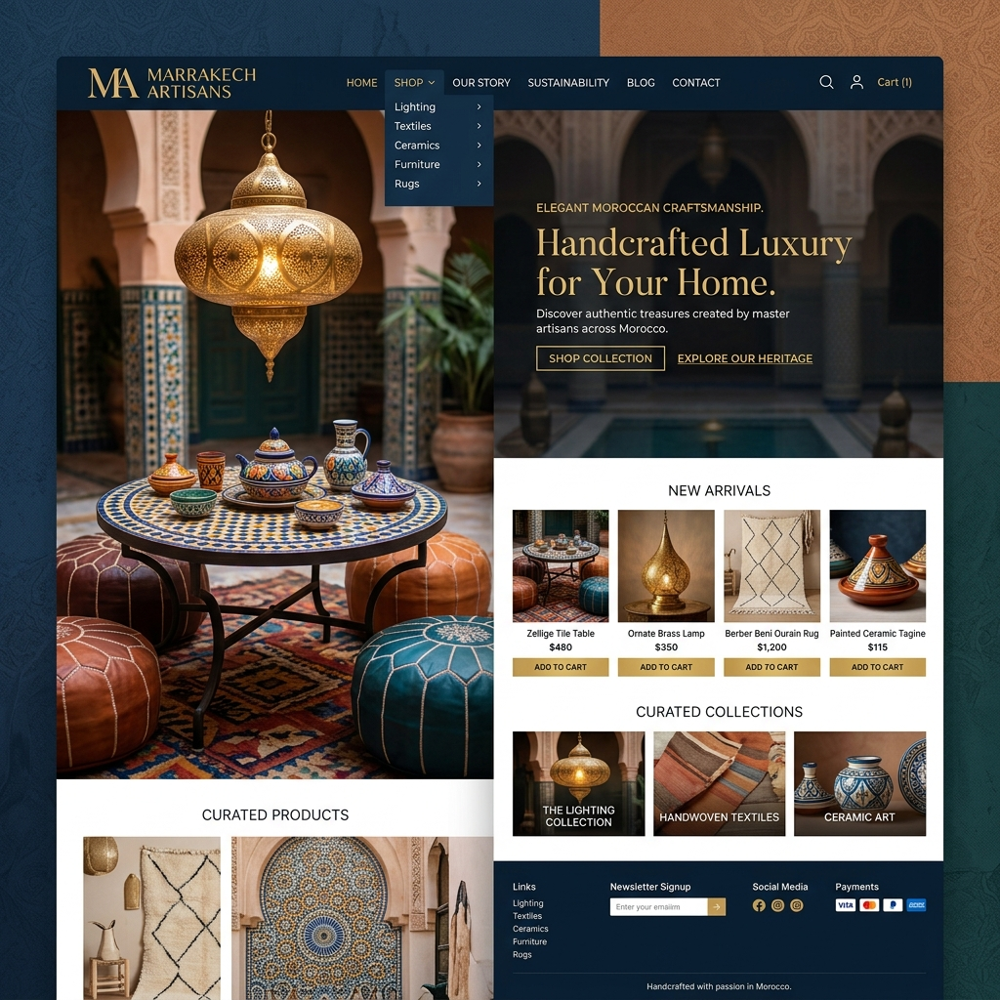

Projet web - Soutenance
SOUK
Marketplace SaaS marocaine
Application web e-commerce qui aide les artisans, createurs et vendeurs marocains a creer une boutique en ligne, presenter leurs produits et recevoir des commandes.
Introduire le nom, le type et la vision : SOUK est une web application SaaS adaptee au commerce local marocain.
